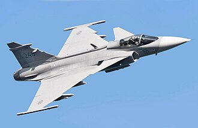
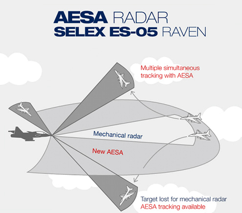
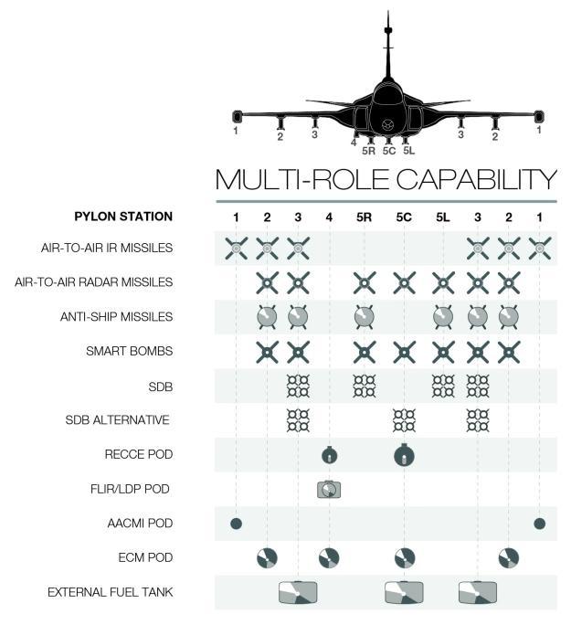
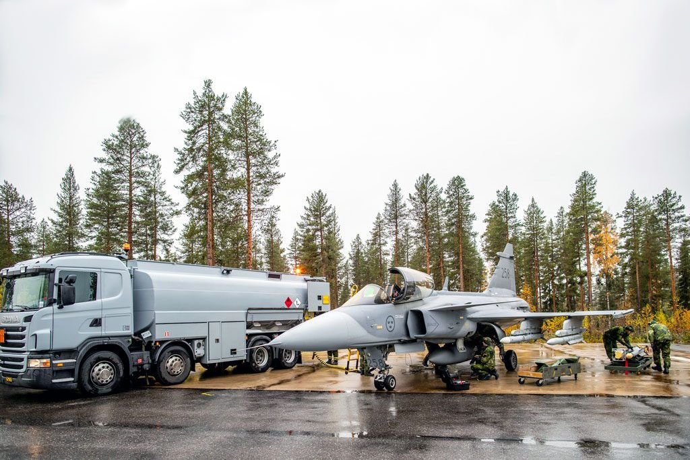
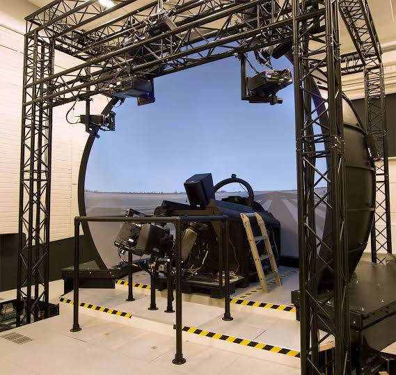
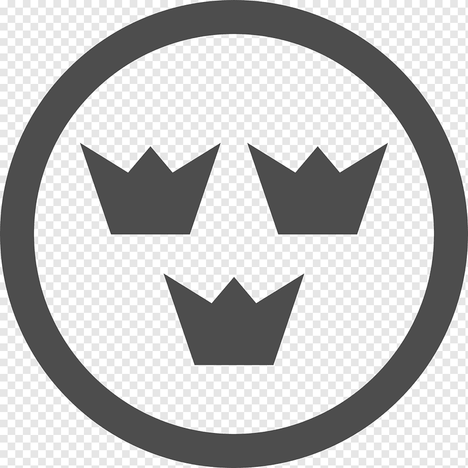
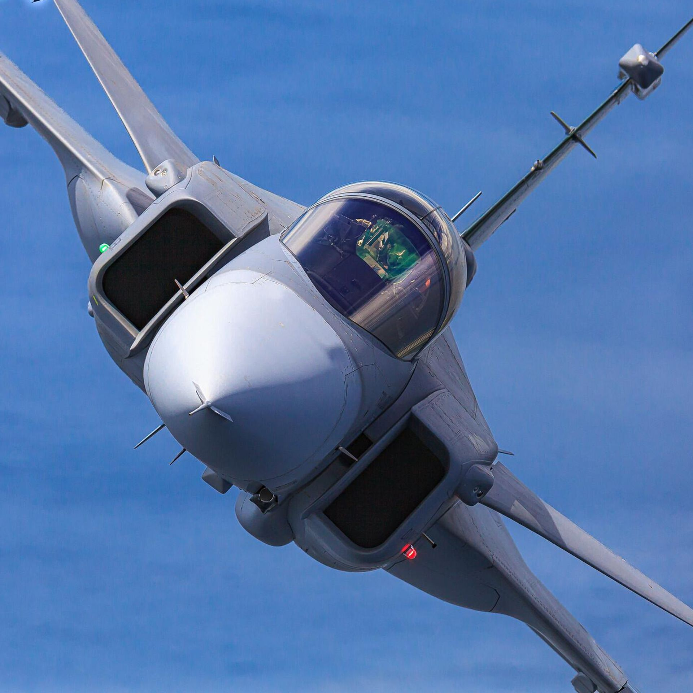

Sensores y Radares

Armamento Avanzado

Soporte y Operaciones

Sistemas de Entrenamiento

Sobre el Analista
Publicaciones técnicas sobre aviación moderna.
 AIRE
>
AIRE
>







Publicaciones técnicas sobre aviación moderna.